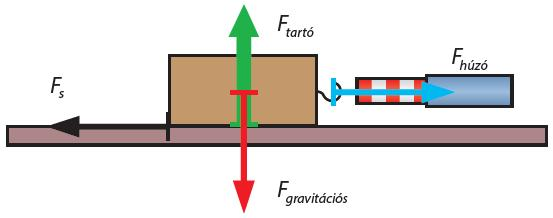

Súrlódás
Mi az a surlodás? A kérdésre a válasz nem bonyolult jöjjünk is elő néhány mindennapi gyakorlati példával:
Télen homokot szórnak a járdára/utakra ezzel csökkentve a csúszás, surlódás veszélyét.
Autó vezetésnél, fékezéskor is van surlódás továbbá a motoroknál a mozgó alkatrészeket olajozással csükkenthetjük a surlódást amivel ugye nem kopnak annyira azalkatrészek.
Érdekes módon a gyufa meggyújtása is surlódással jár amikor végig huzzuk a gyufát a dobozon akkor a surlodáskor keletkezett hő meggyújtja a gyufa fején lévő foszfort.
A téli és nyári gumiabroncs:
Azonkivül ,hogy jol megkérik az árát nagyon fontos szerepe van.
A táli/nyári környezeti útviszonyok különböző körülményeket teremntenek az autósok számára.
Télen az utak, jegesek, vizesek csúszósak, ezért rossz a tapadási felület is ezért nem mindegy , hogy milyen bordázatú a gumiabroncs
Egy hétig lehetne sorolgatni a példákat de, szerintem ennyi elég is mennyünk tovább,
de mit is jelent a surlódásnak a definiciója?
Kérem szépen azt, hogy egy test egyenletes mozgatásához erőt kell kifejtenünk rá, míg a vízszintes talajon magára hagyott test sebessége folyamatosan csökken.
Ezeket a jelenségeket azzal magyarázzuk, hogy a talaj fékezőeröt fejt ki a testekre.
Ezt a fékezőerőt nevezzük súrlódási erőnek, amelyet F-el szokás jelölni.
A surlódási erő fellépésének egyik oka az érintkező felületek érdessége: felületeken kiemelkedések és bemélyedések vannak. Ezt az érdességet még teljesen simának tűnő felületeknél is ki lehet mutatni.
A súrlódási erő nagysága
Ha egy testnek a vízszintes talajon állandó sebességgel való mozgatásához a testre egy F erőt kell kifejteni, akkor arra következtethetünk, hogy a testre egy fékezőerő is hat.
A test állandó sebességgel mozog, nem gyorsul, így a súrlódási erő éppen egyensúlyt tart az F(h) erővel.
F(h)=F(s).
A súrlódási erő nagysága egyenesen arányos a felületre merőleges nyomóerő nagyságával.
Jelöljük a felületre merőleges nyomóerőt F (ny) -nyel, a súrlódási erőt F(s).
F(s) = μ * F(ny)
Az arányossági tényezőt csúszási súrlódási együtthatónak nevezzük. Jele: μ (görög betű).
A súrlódási erő adott test esetében nem függ az érintkező felületeke nagyságától. A súrlódási erő nagysága függ az érintkező felületek anyagi minőségétől.
A csúszási súrlódási erő az érintkező felületek érdességére jellemző csúszási súrlódási együttható és a felületre merőleges nyomóerő szorzata:
F(s)= μ * F(ny)
A tapadási súrlódás
A talaj és a vele érintkező test felülete egymáshoz képest nem mozdulnak el, miközben a felületek érdességei között erőhatás lép fel.
A felület síkjában mindkét testre erő hat, ezt a jelenséget tapadási súrlódásnak nevezzük.
A tapadási súrlódás következtében fellépő erőt tapadási súrlódási erőnek nevezzük. Jele F(t).
A tapadási súrlódási erő nagysága nem egy meghatározott érték, hanem nagysága pontosan akkora, amekkora erőt, a nyugalomban lévő testre kifejtünk.
A tapadási súrlódási erő mindig ellenőrként (kényszererőként) lép fel.
Az az erő, amelynek hatására a sík talajon addig álló test éppen megindul, egyenlő a tapadási súrlódási erő legnagyobb értékével.
Ezt a tapadási súrlódási erő maximumának nevezzük, amely egyenesen arányos a testet a talajhoz nyomó erővel.
Jele: F(t)max.
F(t)max = F(t)max = μ(0) * F(ny)
A tapadási súrlódási együttható függ az érintkező felületek anyagi minőségétől.
A tapadási súrlódási erő nagysága felírható:
0 < F(t) < F(t)max = μ(0) * F(ny)